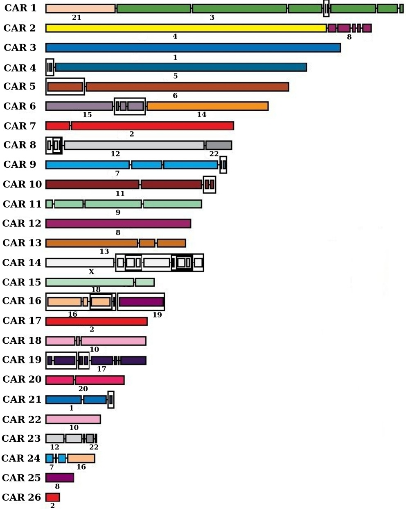
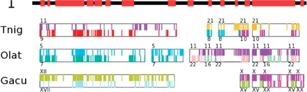
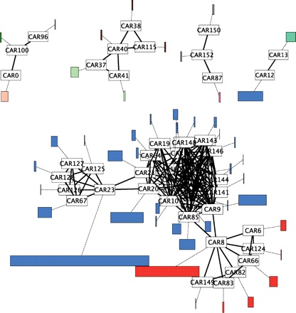
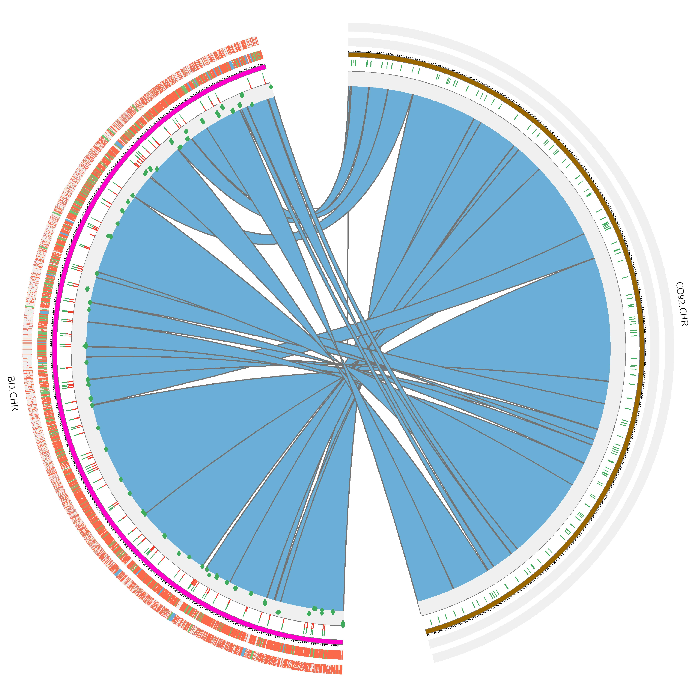

|




|
One of our favorite research problems is the reconstruction of
ancestral genome structures (genome maps based on synteny blocks, or
gene orders). Our approach follows the comparative paradigm, that
assumes that conserved features of related extant genomes indicate
potential ancestral genome features. We work within two
methodological frameworks for this problem: a local approach, that
considers a single ancestral genome within a given species phylogeny [PLoS Comput Biol 2008,ANGES],
and a global (aka small parsimony approach), that considers all
ancestral genomes of a species phylogeny at once [ISBRA 2016.
Lately, we aim to extend these approaches in order we can incorporate
in the computation models genefamily events such as gene duplication,
loss or transfert. In this approach, we developed a probablistic
approach within the DeCo algorithmic framework
[DeClone]. This
line of work also motivates motivated a series of papers on the
correction of gene trees
[Bioinformatics
2014] and on the reconciliation between gene trees and species
trees
[ecceTERA].
The recent breakthroughs in ancient DNA (aDNA) sequencing
naturally lead us to investigate the problem of applying the
principles of the methods we developed to reconstruct ancestral
genomes maps to the assembly of aDNA sequencing data. Our first
results, on scaffolding of ancient Yersinia pestis genomes
illustrates the relevance of this approach.
[FPSAC].
We are currently focusing a lot on the analysis of a fascinating, large-scale, data set composed of toughly twenty Anopheles mosquito genomes [Science 2015]. This in turn raises interesting questions on how to handle fragmented genome assemblies in genome rearrangement studies [a href="http://www.biomedcentral.com/content/pdf/1471-2164-16-S10-S11">BMC Genomics 2015].
Last, in a starting collaboration with Leonid Chindelevitch and Will Hsiao, funded by Genome Canada, we are interested in the evolution of human pathogens, either within short-time local outbreaks, or within a large historical context. This work ties up nicely with our current work on the analysis of ancient human pathogens using ancient DNA data.
 Computational Methods for Paleogenomics and Comparative Genomics
Computational Methods for Paleogenomics and Comparative Genomics